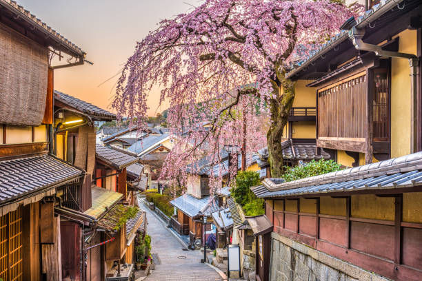
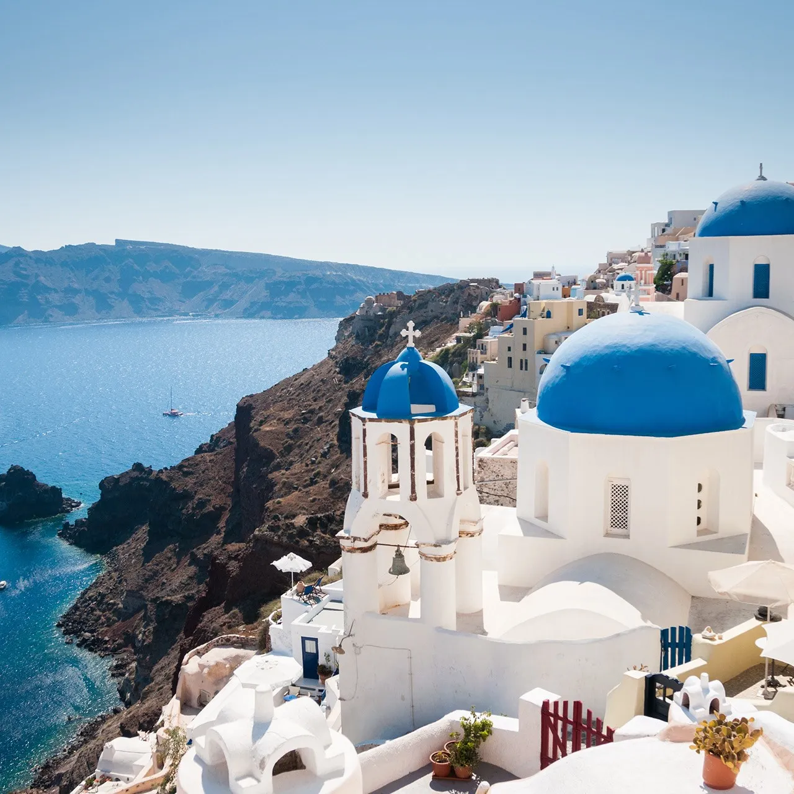
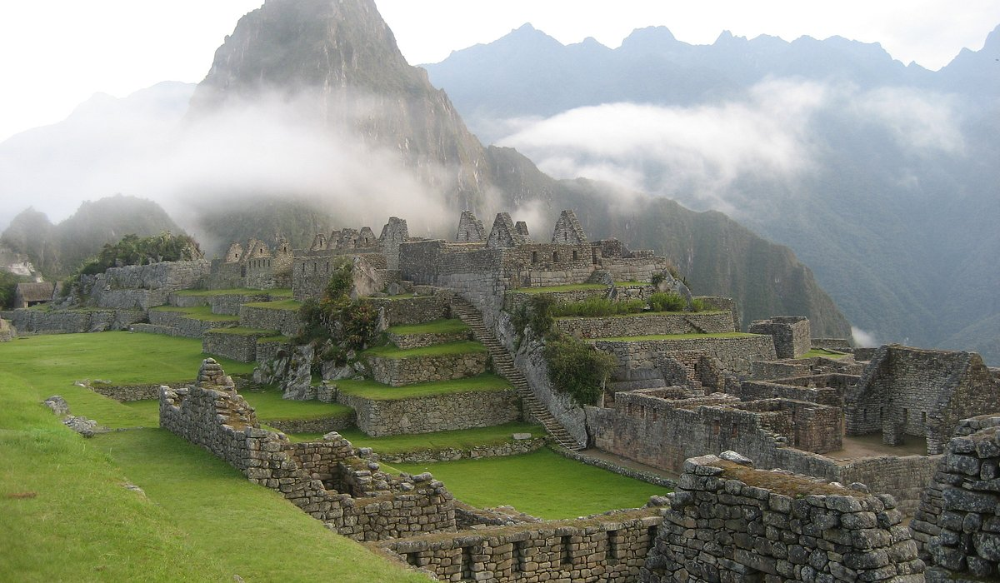
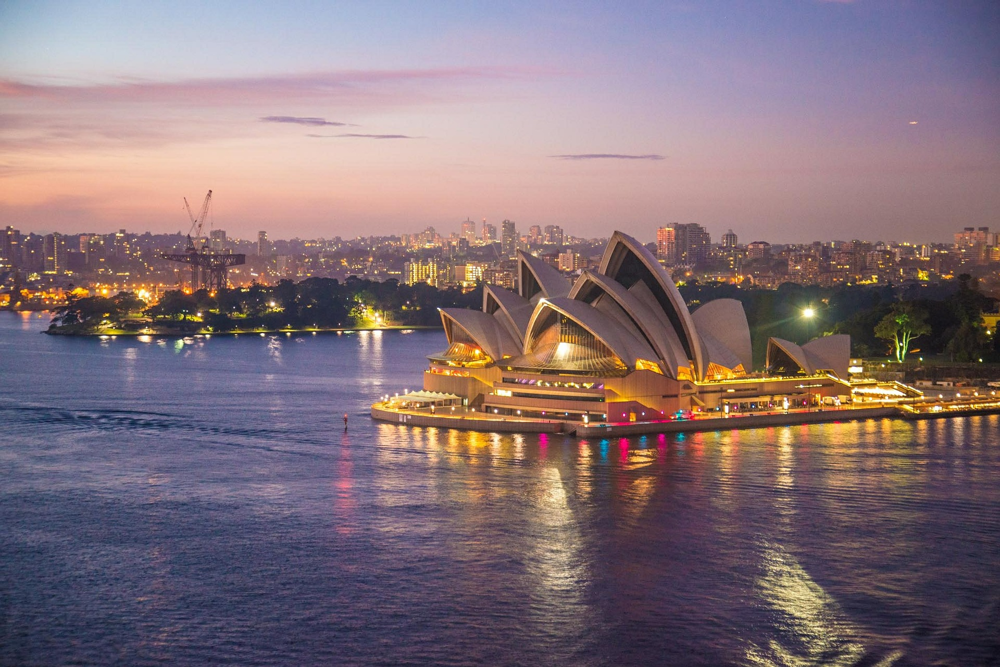
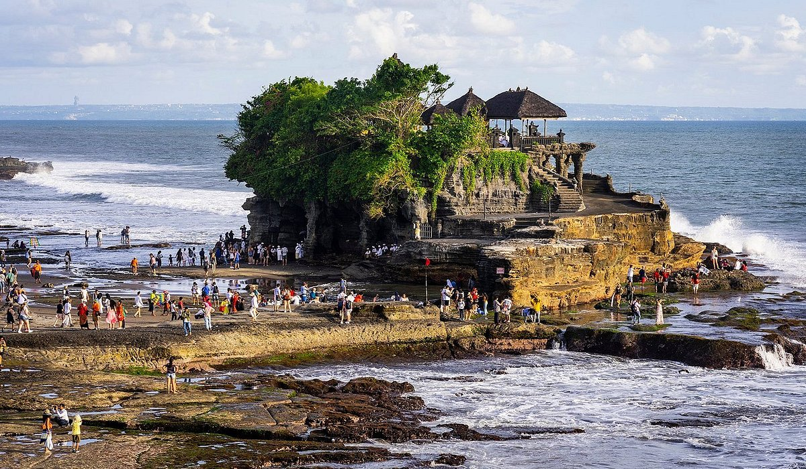
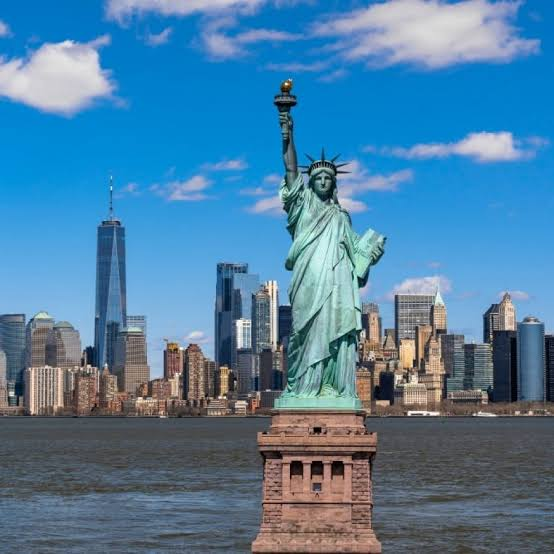
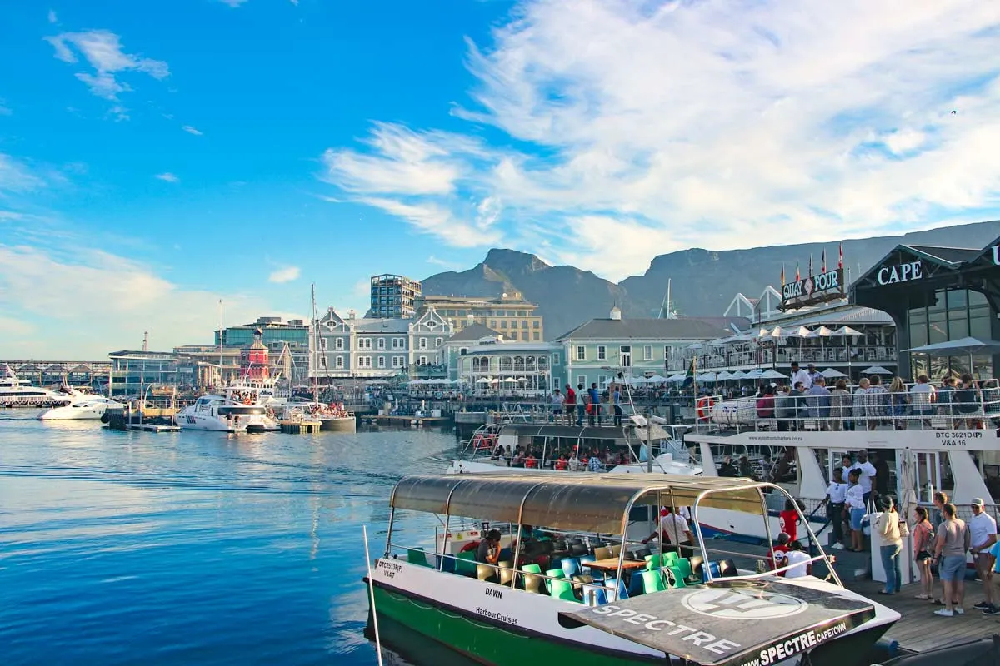
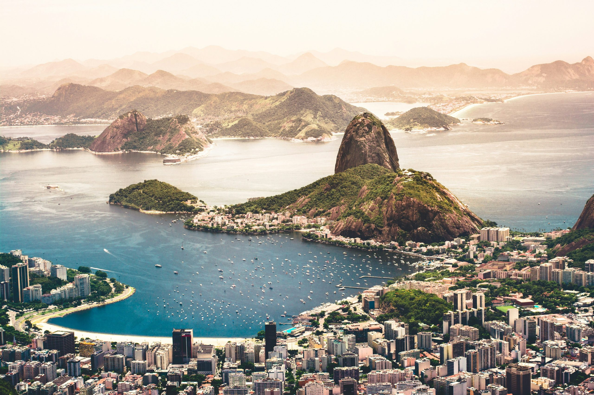

1. Paris, France
Known as the "City of Light," Paris is famous for its iconic landmarks like the Eiffel Tower, Louvre Museum, and Notre-Dame Cathedral. The city's rich history, art, and culture make it a must-visit destination.

Travelling allows us to explore new cultures and broaden our horizons. Here are my top 10 travel destinations that I hope to visit someday!
Known as the "City of Light," Paris is famous for its iconic landmarks like the Eiffel Tower, Louvre Museum, and Notre-Dame Cathedral. The city's rich history, art, and culture make it a must-visit destination.
Kyoto is renowned for its beautiful temples, traditional tea houses, and stunning gardens. The city offers a glimpse into Japan's rich cultural heritage and is especially magical during cherry blossom season.

Santorini is a famous Greek island in the Aegean Sea. It is loved for its dramatic cliffside views, white houses, and blue-domed churches. Millions of people visit to see the magical sunsets, explore volcanic sand beaches, and enjoy romantic island getaways.

Machu Picchu is a 15th-century Inca citadel sitting high in the Andes mountains of Peru at nearly 7,970 feet elevation. Designated a UNESCO World Heritage Site, it attracts over a million global visitors yearly with its iconic dry-stone architecture, breathtaking mountain peaks, and rich history.

Sydney is a top global travel destination known for its bright harbor, iconic architecture, and golden beaches. Key highlights include the Sydney Opera House, the Sydney Harbour Bridge, world-famous Bondi Beach, and the historic The Rocks district, blending outdoor adventure with a vibrant culinary and cultural scene.

Rome, Italy, is a premier global tourist destination known as the Eternal City. It blends thousands of years of striking ancient history, vibrant street life, and world-class culinary experiences. Key highlights include the Colosseum, Vatican City, and the Trevi Fountain.

Bali is a world-famous Indonesian island destination known for its volcanic mountains, iconic beaches, lush rice terraces, and vibrant Hindu culture. Top regional hubs include Ubud for arts and culture, Canggu and Seminyak for surfing and nightlife, and Uluwatu for dramatic sea cliffs

New York City is a top global travel destination. It is famous for iconic landmarks like the Statue of Liberty, the bright lights of Times Square, the green space of Central Park, and world-class art at The Metropolitan Museum of Art.

Cape Town, nicknamed the Mother City, is a top global tourist spot in South Africa known for its dramatic Table Mountain, stunning coastal beaches, vibrant neighborhoods like Bo-Kaap, and world-class nearby winelands. It blends rich history, wildlife encounters, and outdoor adventure.

Rio de Janeiro is a world-class destination renowned for its dramatic landscape where lush green mountains meet the Atlantic Ocean. Key highlights include the iconic Christ the Redeemer statue, scenic Sugarloaf Mountain, and vibrant stretches of sand like Copacabana and Ipanema beaches, complemented by a rich and infectious local culture.
